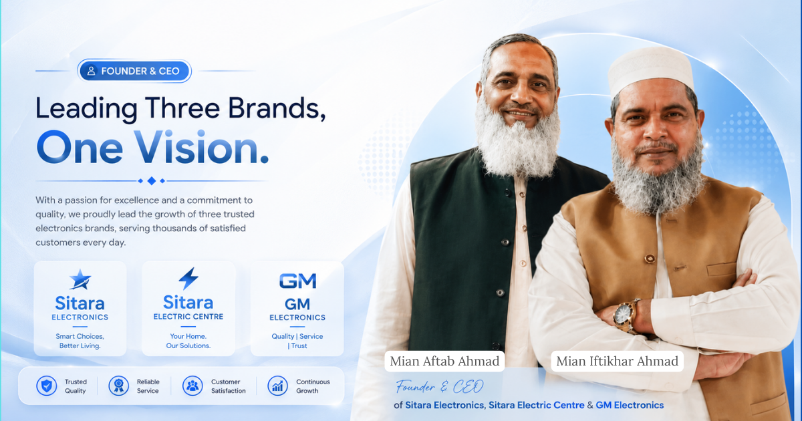

Meet the founders who built Sitara Electronics,Sitara Electric Centre & GM Electronics with trust, quality products, and a commitment to customer satisfaction.

Sitara Electronics is guided by experienced leadership with a vision to provide reliable electronics solutions and exceptional customer service.